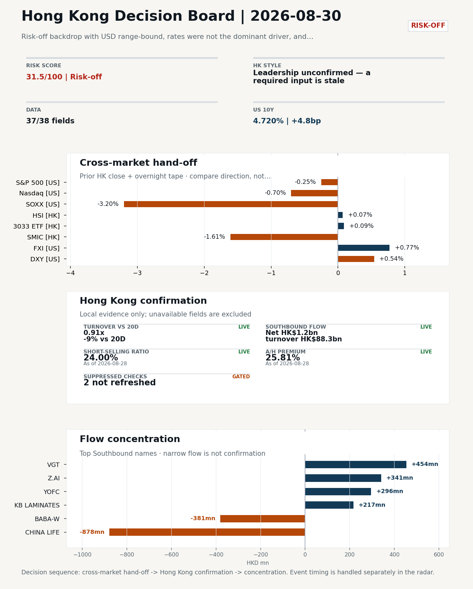
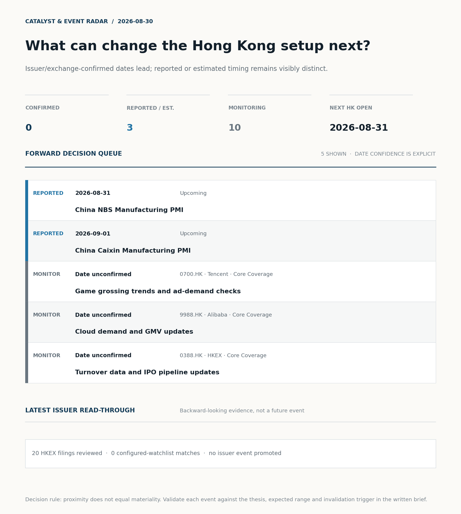
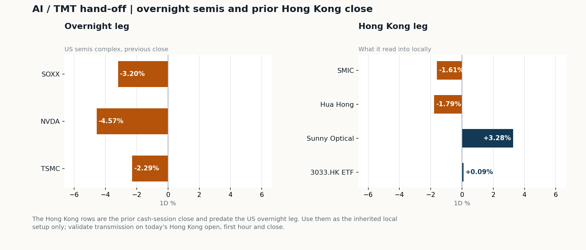
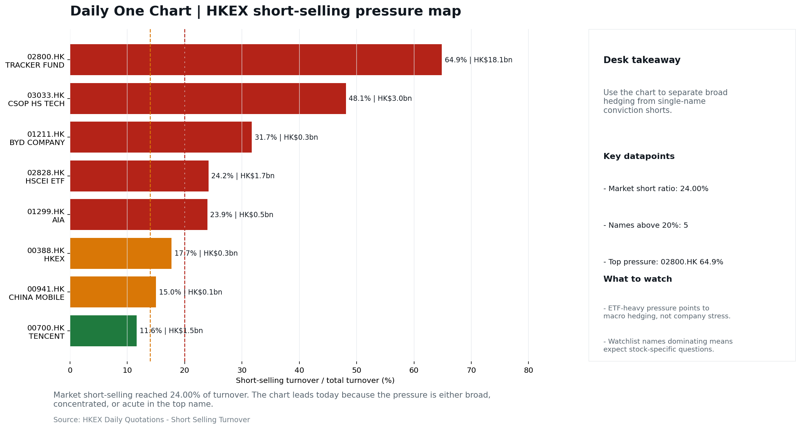
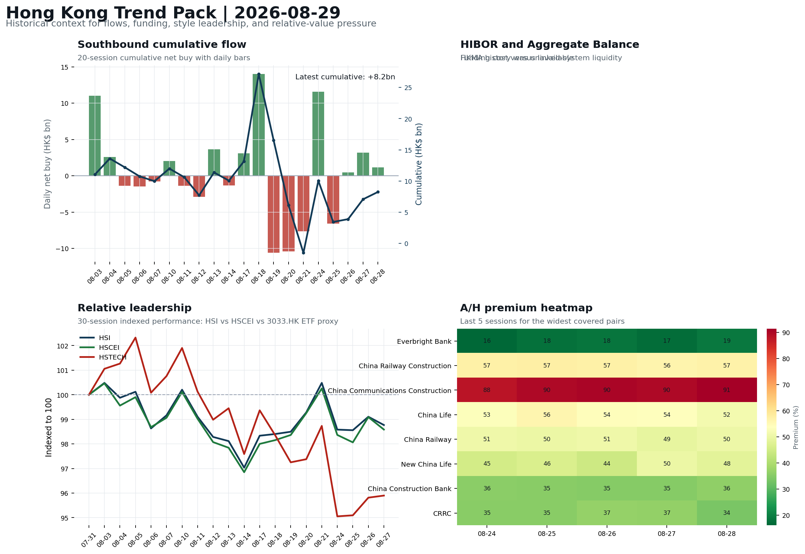

In this issue
Morning Research Workbench | 2026-08-30
Executive Summary
- Did yesterday's call work? UNRESOLVED - No comparable next close is available yet, so the call is still open.
- What changed overnight? Semis led lower: SOXX -3.20%, NVDA -4.57%, TSMC -2.29%. HSI +0.07% and 3033.HK +0.09%.
- What it means for AI/TMT Style call withheld: 3033.HK ETF / HSCEI comparison blocked: effective dates differ (2026-08-27 vs 2026-08-28). The stale input is excluded from the risk score.
- What to watch today Next scheduled catalyst: China NBS Manufacturing PMI on 2026-08-31. Confirm if SMIC and Hua Hong open in the same direction as the overnight leg and hold it through the first hour; invalidate if they track HSCEI instead.
Layer 1 | Weekly Scan (5 min)
1.1 Last Week's Call
Verdict: UNRESOLVED. No comparable next close is available yet, so the call is still open.
Recent record. 6 confirmed / 4 broken over the last 10 scoreable calls (60.0% hit rate). This is a directional close-to-close diagnostic, not a track record.
1.2 Opening Decision Board
Global-to-Hong Kong signals
Decision-useful subset: each row states the implication and the next test. Descriptive secondary monitors are kept out of the five-minute scan.
| Signal | Last / move | Interpretation | Confirmation / invalidation |
|---|---|---|---|
| S&P 500 | 7,711.76 / -0.25% | Broad US risk fell without a clear driver in today's fields; treat it as beta, not a signal. | Watch whether Nasdaq and offshore-China proxies move the same way. |
| Nasdaq 100 | 29,433.43 / -0.70% | Growth lagged broad beta, warning that headline risk-on may not transmit cleanly to the 3033.HK ETF proxy. | 3033.HK versus HSI leadership carries the read; rising yields would undo it. |
| Hang Seng Index | 25,584.79 / +0.07% | Broad beta rose with no single driver visible in today's fields. | Southbound participation decides whether this is investable or just a print. |
| Hang Seng TECH ETF (3033.HK) | 4.5360 / +0.09% | Growth and broad beta moved together; there is no decisive style rotation yet. | Needs a stable CNH and Southbound buying to become a duration signal. |
| Semiconductors (SOXX) | 508.62 / -3.20% | Semis underperformed the Nasdaq by 2.50pp, so this is a cycle move rather than broad growth weakness. | SMIC and Hua Hong at the open show whether it transmits to Hong Kong. |
| US 10Y | 4.7200% / +4.8bp | The yield proxy rose, tightening the discount-rate backdrop for long-duration Hong Kong growth. | Read it through 3033.HK relative performance, not the index level. |
| USD/CNH | 6.7130 / -0.03% | CNH was stable, removing an immediate FX impulse but not confirming equity direction. | FXI and Southbound flow decide whether this reaches Hong Kong equities. |
| VIX | 14.43 / -0.55% | Lower implied volatility reduces near-term stress, but is supportive only if equity breadth confirms. | Falling volatility on narrowing breadth is a warning, not support. |
Secondary monitors retained in the source bundle: SMIC (0981.HK), CSI 300, China 10Y, CN-US 10Y spread, DXY, USD/HKD, Brent crude, COMEX gold, Copper.
Hong Kong local confirmation
Coverage gate: 1 unavailable local checks are suppressed here and retained in validation metadata.
| Check | Value | Status | Source / as of | Why it matters |
|---|---|---|---|---|
| Main Board turnover vs 20D | 0.91x | -9% vs 20D | Live local | HKEX | 2026-08-28 | Trailing 20-session average turnover was HK$255.0bn. |
| Southbound / Northbound net flow | Southbound Net HK$1.2bn | turnover HK$88.3bn | Northbound Turnover RMB278.1bn | net not reported | Live local | HKEX Connect | 2026-08-28 | Southbound net buy is calculated from HKEX disclosed buy and sell turnover. |
| Short-selling ratio | 24.00% | Live local | HKEX | 2026-08-28 | Official HKEX stock-level short-selling table, aggregated as a share of total market turnover. |
| AH premium index | 25.81% | Live public | Yahoo | 2026-08-28 | Fixed 10-name basket, equal-weighted, both legs priced on the same date; comparable across dates. Covered-pair average was +32.80% across 20 pairs. |
| USD/HKD spot vs band | 7.8391 | Live quote | Yahoo | 2026-08-28 | Mid-band: 109 pips from the weak side and 891 pips from the strong side, so the peg is not an active constraint. |
| Hong Kong leadership | Leadership unconfirmed - a required input is stale | Proxy | HSI / HSCEI / 3033.HK ETF relative | 2026-08-28 | Use HSI / HSCEI / 3033.HK ETF relative moves as the opening style read. |
Risk state and evidence
Composite risk score: 31.5/100 | Regime: Risk-off
| Component | Score impact | Evidence |
|---|---|---|
| US beta | -1.5 | S&P 500 -0.25% |
| HK growth ETF proxy | +0.4 | 3033.HK ETF +0.09% |
| Semis complex | -9 | SOXX -3.20% |
| Offshore China proxy | +3.9 | FXI +0.77% |
| Dollar pressure | -5.4 | DXY +0.54% |
| Volatility | +1.1 | VIX -0.55% |
| HK short-selling | -8 | Short-selling ratio 24.00% |
| HK turnover | +0 | Turnover 0.91x 20D |
Base 50 plus the component deltas above. Semis complex entered the score on 2026-08-22; earlier scores in the ledger exclude it.
Next Week Checklist
- Risk-off backdrop with USD range-bound, rates were not the dominant driver, and FXI outperformed Nasdaq 100 Still-moving markets | No fresh Hong Kong cash session is assumed; use global active assets and policy/event flow to prepare the next open.
- China NBS Manufacturing PMI (Upcoming) Macro / policy | Growth direction, cyclicals, and manufacturing-chain pricing | Industries: Machinery, Building materials, Industrials
- US Non-Farm Payrolls (Upcoming) Macro / policy | Watch whether it changes the day's core market narrative | Industries: Market-wide
- China Caixin Manufacturing PMI (Upcoming) Macro / policy | Growth direction, cyclicals, and manufacturing-chain pricing | Industries: Machinery, Building materials, Industrials
Visual Dashboard

Catalyst & Event Radar

Chart read: No issuer/exchange-confirmed event date is populated; 3 reported or estimated timing item(s) and 10 undated trigger(s) remain explicit.
Source: Public calendars, issuer disclosures and configured research watchlists
Layer 2 | Core Research (20-30 min)
2.1 Global-to-Hong Kong Transmission
Weekly review mode: synthesize the completed Hong Kong week, retain the main cross-asset and policy lessons, and convert them into next-week preparation rather than treating Saturday as a fresh cash-market session.
Market Setup Core tape. Overnight US evidence (2026-08-28 close) shows a divided tape: S&P 500 -0.25% and Nasdaq 100 -0.70% with NVDA -4.57%, SOXX -3.20% and TSM -2.29% dragging AI and semis. Main driver. USD stayed range-bound (DXY +0.54%, USD/CNH -0.03%), so rates were not the dominant driver; the 10Y +4.8bp move and WTI +1.58% reflect a stickier-rates and geopolitics overlay rather than a fresh USD leg. HK relevance. The prior-HK tape (HSI +0.07%, HSCEI +0.00%, 3033.HK ETF +0.09%) was essentially flat, so the overnight US selloff is a new headwind rather than a confirmation of last week's move.
Key Drivers
- AI capex complex led the US downside.
- USD was range-bound and rates were not the dominant driver.
- Offshore-China tape outperformed: FXI +0.77% versus Nasdaq 100 -0.70% points to China-specific positioning, supported by Southbound +HK$1.2bn net buying last session and the weekly +9.8bn cumulative reading.
- Geopolitical and policy overlay: U.S.-China rhetorical flare-up ahead of Xi's Washington visit and a Warsh-pivot Fed setup keep the risk premium on HK risk assets even with stable CNH; short-selling ratio 24.0% (100th pct, 60-session) argues against chasing any rebound without breadth confirmation.
Hong Kong Read-Through Opening implication. For the 2026-08-31 open, the base case is that the AI/semis selloff reaches HK through SMIC and Hua Hong before the broader index feels it, while any constructive open requires 3033.HK ETF and FXI to confirm offshore-China bid alongside cleaner breadth. Hong Kong style leadership and flow confirmation are set out in the Hong Kong review below.
Watch Points
- USD composite moved higher by +0.01pct intraday, with a 0.383pct range.
- Main turning points appeared around 2026-08-28 08:15 peak / 2026-08-28 08:35 trough / 2026-08-28 08:55 peak, suggesting event-driven repricing rather than a clean one-way USD move.
- The biggest cross-asset divergence was FXI versus Nasdaq 100, a spread of 0.293pct.
- Gold moved -2.75pct intraday with a 3.554pct high-low range.
Weekly Review Map
- Weekly review window: 2026-08-24 to 2026-08-28. Core regime: Risk-off backdrop with USD range-bound, rates were not the dominant driver, and FXI outperformed Nasdaq 100. Hong Kong leadership: Leadership could not be determined cleanly.
- Method note: Trend summary uses the latest available five observations from the Hong Kong Trend Pack inputs.
Cross-asset weekly dashboard
| Asset | Latest move | Weekly read |
|---|---|---|
| S&P 500 | -0.25% | Risk appetite |
| Nasdaq 100 | -0.70% | Growth style |
| Hang Seng Index | +0.07% | Hong Kong beta |
| Hang Seng TECH ETF (3033.HK) | +0.09% | Hong Kong growth / internet proxy |
| DXY | +0.54% | Global liquidity |
| US 10Y Treasury Yield | +4.8bp | Rates path |
| Gold | +0.25% | Hedge / real yields |
| VIX | -0.55% | Volatility and hedging |
Hong Kong / China weekly tape
| Signal | Latest move | Read |
|---|---|---|
| Hang Seng Index | +0.07% | Hong Kong beta |
| Hang Seng China Enterprises Index | +0.00% | China SOE / H-share tone |
| Hang Seng TECH ETF (3033.HK) | +0.09% | Hong Kong growth / internet proxy |
| China Large-Cap (FXI) | +0.77% | China sentiment |
| USD/CNH | -0.03% | China FX sentiment |
| USD/HKD | +0.00% | Hong Kong funding lens |
Five-session trend evidence Window: 2026-08-21 to 2026-08-28
| Signal | Five-session change | Latest | Desk read |
|---|---|---|---|
| Southbound flow | +9.8bn over 5 sessions | +1.2bn | 4/5 positive sessions; cumulative buying is the flow-confirmation test for next week. |
| HK style leadership | HSCEI led (-1.7pp); HSTECH lagged (-2.8pp) | HSCEI leadership | Use HSI / HSCEI / 3033.HK ETF spread to separate broad beta from growth-led rerating. |
| A/H premium dispersion | +0.8pp average change | 48.4% average premium | Premium narrowing can support H-share relative demand |
Flow and attribution clues
- :
- :
- :
Next-week desk questions
- Did Southbound flow confirm the index move, or was the week mainly offshore beta without local money follow-through?
- Did HIBOR and Aggregate Balance point to benign funding, or should tighter HKD liquidity be part of next week's risk case?
- Was leadership broad enough beyond the 3033.HK ETF / platform beta proxy, or was the week concentrated in a narrow style pocket?
- Which dated macro, policy, earnings, or IPO catalyst can realistically change the next-week narrative?
- What single data point would invalidate the base-case market pulse by Monday or Tuesday morning?
Key developments to retain
| Bucket | Item | Why it matters |
|---|---|---|
| B | HP inks deal with U.S.-blacklisted Huawei for licensing the | Capital allocation or shareholder-return events can trigger a valuation reset |
| B | Z.ai shares surge 8% after releasing new AI model running only | This is more about order visibility and product-cycle validation |
| C | Guggenheim Ties Weigh on Acrisure Debt, Dragging High-Yield | Assess whether the story can propagate through the Financials value chain |
| C | Supercars Fuel a New Hybrid Boom | Assess whether the story can propagate through the Autos and EV value chain |
| Upcoming | China NBS Manufacturing PMI | Growth direction, cyclicals, and manufacturing-chain pricing |
| Upcoming | US Non-Farm Payrolls | Watch whether it changes the day's core market narrative |
Next-week playbook
| Date | Catalyst | Desk read |
|---|---|---|
| 2026-08-31 | China NBS Manufacturing PMI | Growth direction, cyclicals, and manufacturing-chain pricing |
| 2026-09-01 | China Caixin Manufacturing PMI | Growth direction, cyclicals, and manufacturing-chain pricing |
| 2026-09-04 | US Non-Farm Payrolls | Watch whether it changes the day's core market narrative |
Curated overnight stories
- Trump ratchets up rhetoric against Beijing as U.S.-China officials meet for Xi's Why it matters: Headline-level U.S.-China tension overlapping an actual diplomatic track sets the geopolitical risk premium for offshore-China assets into the next HK session. HK read-through: Direct read-across to Hang Seng risk appetite and CNH; cyclicals, ADRs and policy-sensitive names (internet, semis, EV) most exposed.
- HP inks deal with U.S.-blacklisted Huawei for licensing the Chinese company's WiFi tech Why it matters: A U.S. hardware major licensing tech from a blacklisted Chinese vendor is a notable signal on the practical limits of the entity-list regime and on Huawei's commercial… HK read-through: Maps to Hong Kong-listed China tech hardware, telecom equipment and Huawei-exposed supply chain names. Read-through is more valuation-and-thesis than a single-day catalyst.
- Z.ai shares surge 8% after releasing new AI model running only on Chinese chips Why it matters: Confirms incremental validation of a China-domestic AI compute stack, the core debate for HK semis and AI names. HK read-through: Most relevant for Hong Kong-listed Chinese AI and semiconductor names, and for the AI-server supply chain. The 8% move is a sentiment pulse.
- September Fed decision now a coin flip as rate-hike odds increase post-Warsh Why it matters: Warsh's Jackson Hole pivot to a less-dovish tone has narrowed the path of U.S. rates and keeps the USD range-bound setup that the weekly theme flags. HK read-through: Primary channel is via USD/CNH and the discount applied to Hong Kong growth names.
- China NBS and Caixin Manufacturing PMI (upcoming), with U.S. NFP the cross-check Why it matters: First hard data check on Chinese manufacturing momentum after the week's risk-off tape and against the U.S. cyclical read. HK read-through: Direct read for Hong Kong cyclicals (machinery, building materials, industrials), China financials and resource names. We do not yet have the prints.
AI / TMT hand-off

Overnight leg. The overnight semis leg was risk-off at -3.35% average (SOXX -3.20%, NVDA -4.57%, TSMC -2.29%). Hong Kong expression. SMIC, Hua Hong and Sunny Optical are under the most pressure at the open, and 3033.HK should be tested before the Hang Seng Index. Observable test. Confirm if SMIC and Hua Hong open in the same direction as the overnight leg and hold it through the first hour; invalidate if they track HSCEI instead, which would mean local flow is overriding the global cycle.
| Name | Role in the chain | 1D | Leg |
|---|---|---|---|
| SOXX | Semis complex | -3.20% | overnight |
| NVDA | AI capex narrative | -4.57% | overnight |
| TSMC | Foundry demand | -2.29% | overnight |
| SMIC | Leading-edge / domestic substitution | -1.61% | Hong Kong |
| Hua Hong | Mature-node pricing cycle | -1.79% | Hong Kong |
| Sunny Optical | Hardware and optics supply chain | +3.28% | Hong Kong |
| 3033.HK ETF | Broad HK tech beta | +0.09% | Hong Kong |
Clock discipline. The Hong Kong rows are the prior cash-session close and predate the US overnight leg. Use them as the inherited local setup only; validate transmission on today's Hong Kong open, first hour and close.
2.2 Hong Kong Local Tape and Flow
Local Tape Setup Local read. The completed 2026-08-24 to 2026-08-28 Hong Kong week ran into a risk-off backdrop with USD range-bound and FXI outperforming Nasdaq 100, suggesting China-specific positioning rather than USD rates did the work. Verification point. Weekly trend_summary shows HSCEI leading HSTECH (-1.7pp versus -2.8pp) with the HSI/HSCEI/3033.HK spread still unconfirmed for leadership, and Southbound net buying of +HK$1.2bn on HK$88.3bn turnover extending a +HK$9.8bn five-session cumulative - the cleanest flow-confirmation test for next week. Risk to watch. Local signals into Monday 2026-08-31 are mixed: short-selling at 24.0% (100th percentile, 60-session) and turnover at 0.91x 20D argue against chasing any rebound without breadth confirmation.
Style and Local Leadership Style call. Leadership unconfirmed - a required input is stale.
- Evidence: No same-date 3033.HK-versus-HSCEI comparison was possible because 3033.HK ETF / HSCEI comparison blocked: effective dates differ (2026-08-27 vs 2026-08-28)
- Portfolio meaning: Do not infer Hong Kong style from the headline index alone; wait for relative price and local-flow evidence.
- Cross-market read: Hang Seng +0.07% / HSCEI +0.00% / 3033.HK ETF +0.09%. Offshore China proxy FXI +0.77% and USD/CNH -0.03% frame cross-border risk appetite. USD/HKD last traded around 7.8391, which keeps the Hong Kong funding lens in focus.
Flow Confirmation Official Stock Connect evidence is available; the Flow Tracker confirms whether local money supports the price action.
Follow-Through Checklist Follow-through check. Confirmation test for Monday 2026-08-31: 3033.HK ETF and SMIC must hold or improve versus HSCEI/2828.HK alongside a fresh Southbound net-buy print to validate a growth-led open. Failure condition. Any style claim remains invalid while the required relative-performance fields are missing or stale.
Cross-asset attribution
| Driver | Direction | Score | Evidence | HK implication |
|---|---|---|---|---|
| Short-selling pressure | drag | 6.3 | HKEX short-selling ratio was 24.00%. | Elevated short activity argues for extra confirmation before chasing rebounds. |
| Oil and geopolitics | mixed | 1.7 | Oil moved +2.12%. | Split the read between energy/cyclicals support and margin/geopolitical pressure. |
| Dollar / CNH pressure | drag | 0.81 | DXY +0.54% / USD-CNH -0.03% | A stable or softer CNH makes Hong Kong follow-through more credible. |
Local flow evidence
Flow Takeaways
- Short-selling pressure is elevated, so local rebounds need cleaner breadth and flow confirmation.
- Stock Connect Southbound: net HK$1.2bn on turnover HK$88.3bn (as of 2026-08-28).
- Stock Connect Northbound: turnover RMB278.1bn; public file provides total turnover/top active names, not full net-buy.
- AH premium: fixed 10-name basket +25.81% (comparable across dates); covered-pair average +32.80% over 20 pairs; widest premium: Everbright Bank 77.71%.
Stock Connect Southbound Active Names
| # | Ticker | Name | Buy | Sell | Net buy | HKEX turnover rank |
|---|---|---|---|---|---|---|
| 1 | 02628.HK | CHINA LIFE | HK$89.9mn | HK$968.4mn | HK$-878.5mn | 9 |
| 2 | 02476.HK | VGT | HK$1,204.6mn | HK$751.1mn | HK$453.5mn | 7 |
| 3 | 09988.HK | BABA-W | HK$1,290.5mn | HK$1,671.3mn | HK$-380.8mn | 2 |
| 4 | 02513.HK | Z.AI | HK$2,014.2mn | HK$1,672.8mn | HK$341.4mn | 2 |
| 5 | 06869.HK | YOFC | HK$1,731.3mn | HK$1,435.3mn | HK$295.9mn | 4 |
AH Premium Dispersion
| Name | A ticker | H ticker | Premium | As of |
|---|---|---|---|---|
| Everbright Bank | 601818.SS | 6818.HK | +77.71% | 2026-08-28 |
| China Railway Construction | 601186.SS | 1186.HK | +56.89% | 2026-08-28 |
| China Communications Construction | 601800.SS | 1800.HK | +53.80% | 2026-08-28 |
HKEX Short-Selling Watch
| Ticker | Name | Short ratio | Short turnover | Total turnover |
|---|---|---|---|---|
| 00388.HK | HKEX | 17.73% | HK$0.3bn | HK$1.8bn |
| 00700.HK | TENCENT | 11.62% | HK$1.5bn | HK$12.7bn |
| 00941.HK | CHINA MOBILE | 14.99% | HK$0.1bn | HK$0.9bn |
- Short-value leaders: 02800.HK TRACKER FUND (HK$18.1bn); 03033.HK CSOP HS TECH (HK$3.0bn); 07709.HK XL2CSOPHYNIX (HK$2.1bn); 02828.HK HSCEI ETF (HK$1.7bn).
2.3 Macro Transmission
Desk read. The week that closed on 2026-08-28 ended in a risk-off tape where USD stayed range-bound, rates did not dominate, and FXI outperformed Nasdaq 100.
Market sensitivity. Hong Kong leadership could not be determined cleanly, and trend signals are mixed: Southbound flow was positive in four of five sessions with +9.8bn cumulative and +1.2bn on the latest day.
HK implication. The A/H premium widened by 0.8pp on the week to a 48.4% average, keeping valuation friction on H-shares.
Macro watchpoints
- Whether Southbound sustains into Monday: flow confirmation (the +9.8bn cumulative, +1.2bn latest) is the principal counterweight to the
- Whether the NBS Manufacturing PMI on 2026-08-31 is consistent with this week's risk-off, USD-range-bound tape, or forces a reset in H-share
- HIBOR and Aggregate Balance into 2026-09-04: any tightening in HKD liquidity changes the Fed-path transmission into HK equity duration ahead of
| Time | Region | Event | Status | Desk read |
|---|---|---|---|---|
| CN | China NBS Manufacturing PMI | Upcoming | Impact: Growth direction, cyclicals, and manufacturing-chain pricing | Attention: 5/5 | Industries: Machinery, Building materials, Industrials | |
| US | US Non-Farm Payrolls | Upcoming | Impact: Watch whether it changes the day's core market narrative | Attention: 5/5 | Industries: Market-wide | |
| CN | China Caixin Manufacturing PMI | Upcoming | Impact: Growth direction, cyclicals, and manufacturing-chain pricing | Attention: 3/5 | Industries: Machinery, Building materials, Industrials |
Positioning and risk backdrop
- Detailed local flow evidence is covered under Flow Tracker and Attribution; keep this section focused on options, hedging, and macro-positioning risk.
2.4 Company Micro Research and Catalysts
| Grade | Sector | Headline | Why it matters | Horizon |
|---|---|---|---|---|
| B | Semiconductors and AI | Z.ai shares surge 8% after releasing new AI model running only on | This is more about order visibility and product-cycle validation | Short-term catalyst |
Company Event Takeaway Desk read. Weekly review for Aug 24 - 28, 2026. Why it matters. The completed HK cash session closed Friday, Aug 28. Follow-up. The HKEX filings are a cluster of low-grade (C) profit warnings from small-cap issuers across agriculture, finance, healthcare, data services, energy, and apparel.
LLM Quick Takes
- 0700.HK | Fact: closed mid-range (54% of 60-session band) on a +1.65% day; one headline notes Tencent activating only 6.4% of its 770B-parameter AI (Hy4). Interpretation (bounded)…
- 9988.HK | Fact: priced ~HK$80bn (~$10.2bn) placement of 710m shares at HK$112.70 on Aug 24 to fund AI buildout; insider buying reported subsequently…
- 1211.HK | Fact: closed at the top quartile (87%) of its 60-session band on a +0.77% session; Bloomberg notes a hybrid-supercar resurgence versus slower EV adoption. Interpretation (bounded)…
- 1299.HK | Fact: closed mid-range at 56% on +1.14%; no news attached in the dataset. Interpretation (bounded): positioning alone does not support a thesis shift…
No immediate portfolio catalyst: 20 official filings were screened and the low-signal market set stays aggregated.
20 profit warnings
Broad-market filings remain traceable in the source appendix; they are not expanded here without a watchlist, estimate or liquidity read-through.
Coverage boundary. sell-side rating changes, IPO / grey-market monitor were not decision-grade in this run; their absence is not treated as confirmation that no event exists.
Core coverage requiring follow-up
Core coverage
| Name | Ticker | Last | 1D | Range position | Morning note |
|---|---|---|---|---|---|
| Tencent | 0700.HK | 455.20 | +1.65% | Mid-range | Marginally higher (+1.65%), mid-range at 54% of its 60-session band. |
| Alibaba | 9988.HK | 113.90 | -1.39% | Mid-range | Marginally lower (-1.39%), mid-range at 63% of its 60-session band. |
Recent headlines for Tencent:
- Tencent Activates Just 6.4% of Its 770 Billion-Parameter AI (GuruFocus.com) Recent headlines for Alibaba:
- Thinking of Buying Alibaba Stock Now? Here's 1 Green Flag and 1 Red Flag. (Motley Fool)
Priority follow-up
| Name | Ticker | Last | 1D | Range position | Morning note |
|---|---|---|---|---|---|
| AIA | 1299.HK | 75.50 | +1.14% | Mid-range | Marginally higher (+1.14%), mid-range at 56% of its 60-session band. |
| BYD Company | 1211.HK | 91.95 | +0.77% | Top of range | Marginally higher (+0.77%), in the top quartile of its 60-session range (87%). |
2.5 Morning Meeting Questions
Q1. Why is there no style call today?
- Evidence: 3033.HK ETF / HSCEI comparison blocked: effective dates differ (2026-08-27 vs 2026-08-28).
- How to answer: A required input was stale, so any relative-performance claim would have compared two different dates. The call is withheld rather than published on partial evidence, and the stale input is excluded from the risk score.
Q2. Short selling was very high at 24.0% - who is positioned against this market?
- Evidence: Short-selling ratio 24.0% (100th pct of the last 60 sessions, very high).
- How to answer: Check the concentration before reading it as bearish: ETF-heavy short turnover is macro hedging, while single-name pressure is company-specific. The HKEX short-selling table in this report separates the two.
Layer 3 | Session Playbook (8-12 min)
3.1 Base Case and Scenario Map
Starting posture. Leadership unconfirmed - a required input is stale (unconfirmed); composite risk 31.5/100 (Risk-off). Do not infer Hong Kong style from the headline index alone; wait for relative price and local-flow evidence.
Scenario map
| Scenario | Observable trigger | Interpretation | Research response |
|---|---|---|---|
| Selective growth confirms | First refresh 3033.HK and HSCEI on the same session and basis; then require a >0.5pp first-hour 3033.HK lead, stable CNH and firmer semis. | The style thesis becomes measurable only after the comparison is aligned. | Keep internet/platform leadership on watch; do not upgrade it from the stale comparison alone. |
| Broad beta confirms | HSI and HSCEI rise together with improving breadth and normal first-hour turnover. | A broad market move is observable even while the style spread remains unavailable. | Research financials, SOEs and index-heavy names alongside growth leaders. |
| Risk-off continuation | HSI and HSCEI weaken, semis lag and CNH depreciation accelerates. | Local risk appetite is deteriorating without a reliable style offset. | Treat rebounds as unconfirmed; focus on balance-sheet, catalyst and crowding risk. |
Clocked validation scorecard
| Window | Check | Prior evidence | Pass condition | What it decides |
|---|---|---|---|---|
| 09:30-10:30 | 3033.HK vs HSCEI | Same-session style spread unavailable | Refresh both legs on one session/basis; only then test for a >0.5pp lead | Whether growth leadership survives the open |
| 09:30-10:30 | Semiconductor hand-off | SMIC -1.61%; Hua Hong Semiconductor -1.79% | Stabilise after the open; at least one stops underperforming HSCEI | Whether overnight semis pressure is contained locally |
| 09:30-10:30 | HSI price zone | 25,585 vs 25,500 / 26,000 reference grid | Hold above the lower grid or reclaim the upper grid with breadth | Whether broad beta is stabilising; grid is derived, not technical analysis |
| 09:30-10:30 | USD/CNH | 6.713 | -0.03% | No acceleration in CNH depreciation | Whether FX permits a clean Hong Kong risk extension |
| At close | Turnover | 0.91x | -9% vs 20D | At least 1.0x the 20-session average | Whether the move had normal participation |
| At close | Southbound | Net HK$1.2bn | turnover HK$88.3bn | Net buying remains positive and broadens beyond one or two names | Whether mainland money confirms the price move |
| At close | Short pressure | 24.00% | Falls versus the prior verified reading (24.00%) | Whether rebound conviction improved |
Upgrade rule. Confirm only after HSI, HSCEI, 3033.HK, turnover, and Southbound evidence refresh on a comparable date. Kill switch. Any style claim remains invalid while the required relative-performance fields are missing or stale. Clock discipline. At 07:30, same-day Southbound, turnover and short-selling outcomes are not known. Use the first-hour price/FX checks provisionally and make the final classification only after the close. Event clock. No same-day decision-grade item is populated; the nearest reported/estimated item is China NBS Manufacturing PMI on 2026-08-31. Verify the issuer or official calendar before relying on the date.
3.2 Conditional Theme Deep Dive
| Field | Read |
|---|---|
| Theme | AI and Compute Chain |
| Angle for the day | Track whether global AI capex, semis, cloud, and server demand are still carrying offshore China internet and hardware sentiment. |
Theme desk read Core thesis. The AI and Compute Chain remains the right framing for the week ahead because the global evidence tilted negative before Friday's close. Evidence. NVDA -4.57% and SOXX -3.20% weakened the AI capex narrative, and the read-through into Hong Kong is mechanical: SMIC, Hua Hong and the 3033.HK ETF are the first names to be tested on Monday's open. What to test. The offsetting local signal is Z.ai's +8% on a Chinese-chip-only model launch, which is more a product-cycle and order-visibility datapoint than a re-rating event.
Signals to keep in mind
- Z.ai shares surge 8% after releasing new AI model running only on Chinese chips
- Guggenheim Ties Weigh on Acrisure Debt, Dragging High-Yield Credit Markets: Assess whether the story can propagate through the Financials
- NVDA -4.57%: The AI capex narrative weakens; expect it to reach HK through sentiment before earnings.
- SOXX -3.20%: Semis sold off, so SMIC, Hua Hong and 3033.HK are the first HK names to be tested.
LLM watch items:
- Monday open in SMIC, Hua Hong and 3033.HK ETF as the first HK expression of NVDA/SOXX weakness
- Tencent follow-through on the Hy4 efficiency story; treat any move as marginal information until external benchmarks confirm inference economics.
- Alibaba price action relative to the HK$112.70 placement level; insider buying is the key offset to dilution and should be tracked daily.
- Southbound flow on Monday: a fifth positive session would confirm the +9.8bn weekly print as accumulation
- A/H premium reaction to the PMIs; a narrowing premium supports H-share relative demand and would be the cleanest confirmation that the week was not
Related names to keep close:
| Name | Ticker | Bucket | Morning read |
|---|---|---|---|
| Tencent | 0700.HK | Core coverage | Marginally higher (+1.65%), mid-range at 54% of its 60-session band. |
| Alibaba | 9988.HK | Core coverage | Marginally lower (-1.39%), mid-range at 63% of its 60-session band. |
| AIA | 1299.HK | Priority follow-up | Marginally higher (+1.14%), mid-range at 56% of its 60-session band. |
Upcoming catalysts tied to the theme:
- 2026-08-31 | China NBS Manufacturing PMI | Growth direction, cyclicals, and manufacturing-chain pricing
- 2026-09-01 | China Caixin Manufacturing PMI | Growth direction, cyclicals, and manufacturing-chain pricing
Relevant headlines:
- Z.ai shares surge 8% after releasing new AI model running only on Chinese chips
- Guggenheim Ties Weigh on Acrisure Debt, Dragging High-Yield Credit Markets
- Supercars Fuel a New Hybrid Boom
3.3 Daily One Chart
Daily One Chart | HKEX short-selling pressure map

Chart read. Market short-selling reached 24.00% of turnover. Why it matters. The chart leads today because the pressure is either broad, concentrated, or acute in the top name.
Source: HKEX Daily Quotations - Short Selling Turnover
3.4 Hong Kong Trend Pack
Hong Kong Trend Pack

Trend read. Four historical lenses: Southbound cumulative flow, HKMA funding and liquidity, HSI/HSCEI/3033.HK ETF relative leadership, and A/H premium dispersion.
Source: HKEX Stock Connect, HKMA liquidity data, and public Yahoo Finance quotes
Optional Appendix | Traceability and Performance (10-15 min)
Report Metadata
Date policy: Review date 2026-08-29 is treated as
Weekly Review. | Global (US/Europe) data date is 2026-08-28; adapter effective date is 2026-08-28 and summary date is 2026-08-28. | Hong Kong local data date is 2026-08-28; role: last completed HK/China cash-market reference tape. Market data quality: Coverage:37/38| Missing:1Report quality:90.4/100| GradeB| Statususable with caveats
Report Quality and Validation
- Quality score: 90.4/100 | Grade: B | Status: usable with caveats
- Run summary: 8 healthy | 2 caveat | 0 failed
- Release recommendation: Send with caveats | The report is usable, but the advisory guidance should travel with it so readers understand the data gaps.
| Source | Status | Bucket |
|---|---|---|
| Macro calendar | partial | caveat |
| Risk and sentiment feed | partial | caveat |
Desk-use guidance summary: 0 blocking | 1 advisory
Desk-use guidance
- Advisory: Questionable narrative fields were removed; use the deterministic fallback copy and review the audit trail.
- Grade capped: 1 prose defect(s) detected: 1 severed_list.
- Grade capped: Hong Kong style comparison blocked: effective dates differ (2026-08-27 vs 2026-08-28)
| Weak component | Score | Read |
|---|---|---|
| Hong Kong local metrics | 54.1 | 5 live, 3 proxy, 3 unavailable local checks. |
Quality warnings
- Hong Kong local metrics is weak: 5 live, 3 proxy, 3 unavailable local checks.
- Narrative fact-check guardrail produced warnings; review the validation table before relying on narrative sections.
- Hong Kong style comparison was withheld because the input dates or bases were not aligned.
Narrative fact-check guardrail
- Checked 35 numeric claims; 0 numeric mismatch(es), 0 logic warning(s); 12 structured claims, 0 source/text warning(s); 0 critical, 0 review. Replaced 1 unsafe narrative field(s) with deterministic fallback copy.
- Deterministic fallback fields: tasks.macro_interpretation.watchpoints[2]
Full component weights, per-source freshness, adapter status and provenance records are archived with this report under audit/ rather than printed here.
Historical Signal Performance
- Readiness: exploratory with caveats | 69 observations | 89 active signal dates | next-close entry, 10bps cost, no same-day returns.
- Interpretation boundary: exploratory until a benchmark reaches 252 sessions and 100 active-signal sessions.
- Data-quality caveat: 23 conflicting price revision(s) and 6 non-session observation(s) remain in the research ledger.
- Daily-use boundary: cumulative return, Sharpe and the performance chart stay out of the daily commute edition until the sample and trading-calendar gates pass; use Yesterday's Call instead.
Source Links
- Z.ai shares surge 8% after releasing new AI model running only on Chinese chips (cnbc_markets)
- Tencent Activates Just 6.4% of Its 770 Billion-Parameter AI (GuruFocus.com)
- Thinking of Buying Alibaba Stock Now? Here's 1 Green Flag and 1 Red Flag. (Motley Fool)
- Alibaba Shares Fell on a $10 Billion AI Raise. Insiders Saw a Buying Opportunity (Insider Monkey)
- Meituan (MPNGF) (Q2 2026) Earnings Call Highlights: Record Revenue and Strategic AI Pivot Drive... (GuruFocus.com)
- Meituan Returns to Profit as Food-Delivery Competition Eases (The Wall Street Journal)
- 00875.HK Profit warning / alert announcement (HKEXnews)
- 01152.HK Profit warning / alert announcement (HKEXnews)
- 01255.HK Profit warning / alert announcement (HKEXnews)
- 01518.HK Profit warning / alert announcement (HKEXnews)
- 01561.HK Profit warning / alert announcement (HKEXnews)
- 08270.HK Profit warning / alert announcement (HKEXnews)
- 08370.HK Profit warning / alert announcement (HKEXnews)
- 00428.HK Profit warning / alert announcement (HKEXnews)